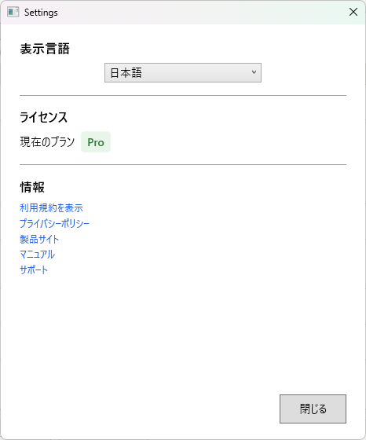
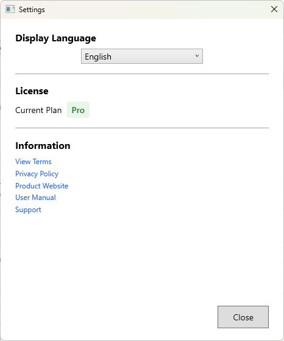

言語切替、ライセンス、外部リンク
設定画面（ダイアログ）では、表示言語・ライセンス・外部リンクなどを確認できます。メイン画面の設定ボタンから開きます。

SecureNavigator は日本語と英語に対応しています。設定画面の「表示言語」で、「システム既定」「日本語」「English」から選択できます。
表示言語の変更は、以下に反映されます。
設定画面の「ライセンス」では、現在のプラン（Free または Pro）を確認できます。
| 表示項目 | 内容 |
|---|---|
| 現在のプラン | Free または Pro |
| Pro にアップグレード / 復元 | Microsoft Store での購入と、購入情報の確認（復元）を行います。 |
| バージョン情報 | アプリバージョン（実行モードも表示されます） |
Pro 版へのアップグレードは Microsoft Store から行います。詳しくは Free と Pro の違い を参照してください。
設定画面には以下の外部ページへのリンクが用意されています。
現在のアプリバージョンは、設定画面の「バージョン情報」で確認できます。
Language switching, license, external links
The Settings dialog lets you check the display language, license, and external links. Open it with the settings button on the main screen.

SecureNavigator supports Japanese and English. You can choose the display language in the Settings screen from System default, Japanese, and English.
Changing the language is reflected in:
The license section of the Settings screen shows your current plan (Free or Pro).
| Item | Description |
|---|---|
| Current Plan | Free or Pro |
| Upgrade to Pro / Restore | Purchase through the Microsoft Store, and re-check your purchase (restore). |
| About | App version (the run mode is also shown) |
Upgrading to Pro is done through the Microsoft Store. See Free vs Pro Features for details.
The Settings screen provides links to the following external pages:
You can check the current app version under "About" in the Settings screen.